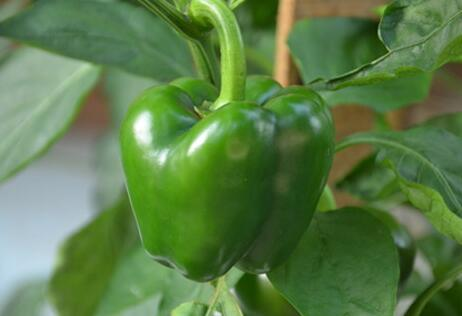

别名：
形态特征：
青椒是
青椒营养丰富，是群众一年四季所喜欢的蔬菜之一。为使城乡居民在淡季吃到新鲜的青椒，近几年本地区进行春大棚青椒秋延后栽培，即通过剪枝和定向田间管理达到一次春播种、育苗和定植栽培出现两次产椒高峰。第一次出现在早春;第二次出现在晚秋。
营养分析：
每100克营养成份含量如下：
能量22千卡 蛋白质1克 脂肪0.2克
碳水化合物5.4克
膳食纤维1.4克 维生素a57微克 维生素e0.59微克
维生素c72微克
硫胺素0.03毫克 核黄素0.03克
钠3.3毫克 钙14毫克 镁12毫克 铁0.8毫克
锰0.12毫克 锌0.19毫克 铜0.09毫克 磷20毫克
硒0.38微克 碘9.6微克 烟酸0.9毫克 叶酸10.9微克
青椒含有青椒素及维生素a、c等多种营养物质，有芬芳的辛辣味。青椒营养价值高，富含维生素b、维生素c、胡
营养价值：
青椒特有的味道和所含的辣椒素有刺激唾液和胃液分泌的作用，能增进食欲、帮助消化、促进肠蠕动、防止便秘。
它含有丰富的维生素c，可以防治坏血病，对牙龈出血、贫血、血管脆弱有辅助治疗作用。
维生素c对人体的作用：
1、是合成胶原蛋白，以形成软骨、骨质、牙釉质及血管上皮的重要基质。
2、可促进脯氨酸转变为羟脯氨酸的反应，而羟脯氨酸为构成胶原的重要成分之一，因此维生素c可促进胶原的生成。
3、维持结缔组织的正常，因为胶原是构成结缔组织的细咆间质。参加体内一些氧化还原反应。
4、增进伤口愈合，增加机体对受伤及感染等压力的感受力。
5、有解毒作用。
6、改善心肌功能，唰氏毛细血管瞻性，增加机体抵抗力。对抗自由基。有助于防癌，降低胆固醇，防止坏血病。
青椒特有的味道和所含的辣椒素有刺激唾液分泌的作用，能增进食欲，帮助消化，促进肠蠕动，防止便秘。一般人都会感觉到，吃了带有辛辣味的青椒之后会心跳加快、皮肤血管扩张。所以中医地它的看法和辣椒一样，有温中下气、散寒除湿的
食用功效：
辣椒味辛、性热，入心、脾经;有温中散寒，开胃消食的功效；主治寒滞腹痛，呕吐、泻痢，冻疮，脾胃许寒，伤风感冒等症。
青椒能增强人的体力，缓解因工作、
1、解热、镇痛：
辣椒辛温，能够通过发汗而降低体温，并缓解肌肉疼痛，因此具有较强的解热镇痛作用；
2、预防癌种：
辣椒的有效成分辣椒素是一种抗氧化物质，它可阻止有关细胞的新陈代谢，从而终止细胞组织的癌变过程，降低癌症细胞的发生率；
3、增加食欲、帮且消化：
辣椒强烈的香辣味能刺激唾液和胃液的分泌，增加食欲，促进肠道蠕动，帮助消化；
4、降脂减肥：
辣椒所含的辣椒素，能够促进脂肪的新陈代谢，防止体内脂肪积存，有利于降脂减肥防病。
制作指导：
1、青椒适用于炒、拌、炝做菜，如“辣子素鸡丁（
2、维生素c不耐热，易被破坏，在铜器中更是如此，所以避免使用铜质餐具。
3、在切辣椒时，先将刀在冷水中蘸一下，再切就不会太辣眼睛了。
4、青椒独特的造型与生长姿势，是喷洒过的农药都积累在其凹陷的果蒂上，因此清洗时应先去蒂。
5、用酱油会使菜色变暗，味道也不会清香。
6、用急火快炒，可使青椒保持原有的色味。
7、选择大而厚实的青椒，抛开、去子，将5%的纯碱水加热到九十度左右，然后把青椒放入浸泡3-4分钟，捞出晾干，不仅颜色得以保持，味道也会很好。
8、青椒不宜一次吃得过多，推荐量为每餐60克。
9、辣椒不宜与
相关人群：
1、一般人群均可食用。
2、眼疾患者、食管炎、胃肠炎、胃溃疡、口腔溃疡、痔疮、咳喘、咽喉肿痛患者应少吃或忌食；同时有火热病症或阴虚火旺，高血压，肺结核病的人慎食。
精选妙藏：
质量好的青椒外观新鲜、厚实、明亮，肉厚并有新鲜绿色的花萼。未成熟的青椒是软的，肉薄，呈淡绿色。一个好的青椒在轻压下虽然也会变形，但它不是皱缩或疲软的。不新鲜的青椒常是皱缩或疲软的，颜色晦暗。穿透果肉的损伤应当避免，否则容易腐烂。腐烂时状如水浸，有脱色或发黑的现象，明显或不明显地下陷。
值得注意的是，装进袋子中储存的青椒如有变质，就会把袋中其他的青椒传染变质。
为了防止青椒变质，应擦去其外面的水分，装进有窟窿的袋子里（既可让其呼吸，又防止水分蒸发）放在不直接接触冷气的冰箱蔬菜格子里保存。青椒是较容易保存的蔬菜，所以1～2周还能保持新鲜。
小贴士：
青椒生吃最佳。
营养专家指出，不同种类的蔬菜应有不同的吃法，生熟结合才能真正吃出
有部分蔬菜可生吃，也可熟吃。但最好是熟吃。像胡萝卜、